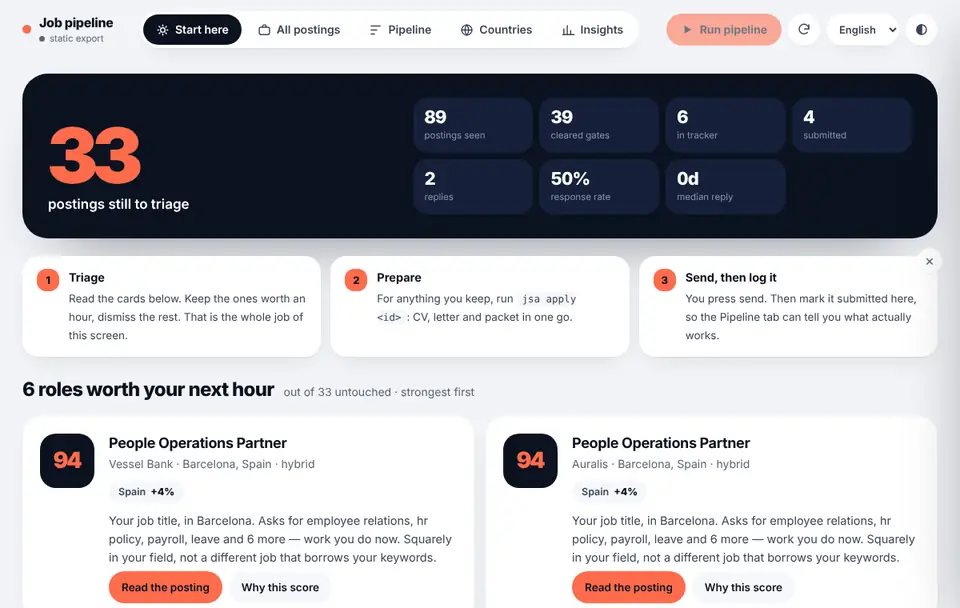

Caso di studio · Domenico Perroni
Tutti i casi di studio (inglese) · PDF · English
Automazione · Selezione
Quali annunci meritano una candidatura?
Cliente: Chi cerca lavoro nelle risorse umane in Europa, con più annunci che sere. Le cifre sono misurate su un candidato inventato, così si possono pubblicare.
Quali annunci di questa settimana meritano una candidatura, e quanto ci si può fidare di un punteggio che lo decide?
21 su 30annunci di verifica valutati come da etichetta, erano 15 con le prime regole
0 su 12annunci da candidatura scartati; tutti tenuti almeno da rileggere
15 su 15annunci da inviare abbinati al posizionamento giusto
306bacheche aziendali, da 8 API di selezione e 2 aggregatori

Cosa ho fatto
- Ho raccolto gli annunci dalle API pubbliche di otto sistemi di selezione e da due aggregatori, con ogni fonte verificata senza rete su una risposta registrata.
- Ho dato a ogni annuncio un punteggio per ciascun posizionamento con regole leggibili: prima i requisiti che escludono (una lingua davvero richiesta, gli anni chiesti, il luogo, il livello, le condizioni), poi le parole chiave, con ogni punto spiegato.
- Ho scritto 160 annunci etichettati candidati, forse o lascia, e ne ho tenuti da parte 30, scritti dopo l'ultima modifica alle regole, per misurare ogni versione su annunci su cui non è stata tarata.
- Ho consegnato una dashboard, CV e lettera che possono citare solo il profilo, e l'installazione in una riga.
Cosa ha trovato
- Le prime regole valutavano come una persona metà degli annunci di verifica: 15 su 30. Regole scritte su annunci etichettati hanno portato il risultato a 20.
- La versione successiva ha corretto ogni errore del suo giro e su un nuovo insieme di verifica ha fatto ancora 21 su 30, come la precedente: le regole frase per frase non generalizzavano più. Il rapporto lo dice, e cita questa cifra, non il 115 su 130 sugli annunci usati per tararle.
- Gli errori rimasti costano poco: tre annunci da lasciare valutati da candidatura, nessun annuncio buono buttato via. Capire se una lingua è richiesta è la regola più difficile: giusta in 3 casi su 5.
Con dati reali
- Le decisioni del candidato come etichette: cosa ha inviato e cosa ha scartato, da 20 decisioni in su.
- Una settimana di annunci veri etichettati alla cieca, per misurare il mercato e non casi scritti.
Come è verificato. 380 test senza rete; la misura gira a ogni modifica, e una regola che peggiora il punteggio blocca la build; l'insieme di verifica si sostituisce prima di pubblicare nuove cifre.
Progettare una misuraMotori di regolePython senza dipendenzePipeline di datiSelezione del personale
Dati sintetici o pubblici; non è consulenza legale, retributiva o finanziaria. Cifre pubblicate il 15 novembre 2026. Domenico Perroni · consulenza HR, people analytics, retribuzioni · Kraków · d0m3n1c0x.github.io